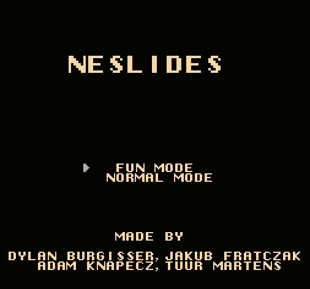
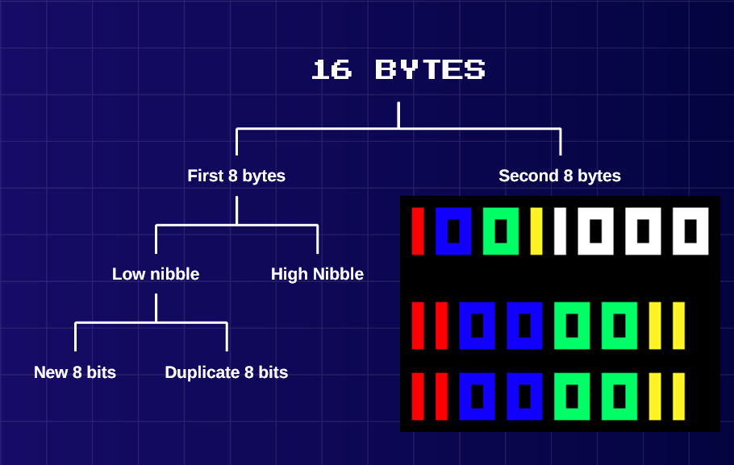
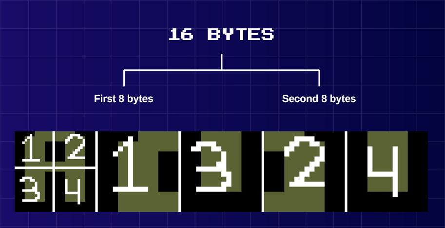
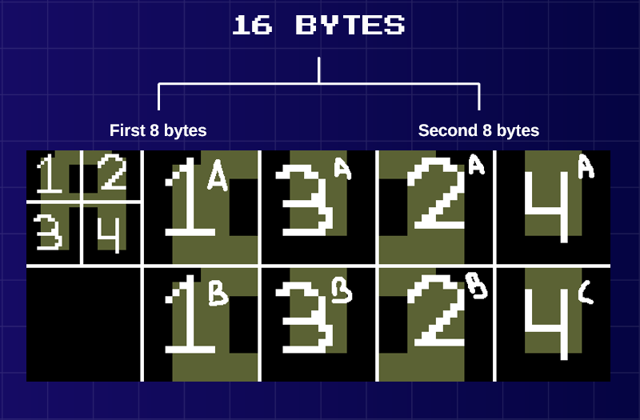
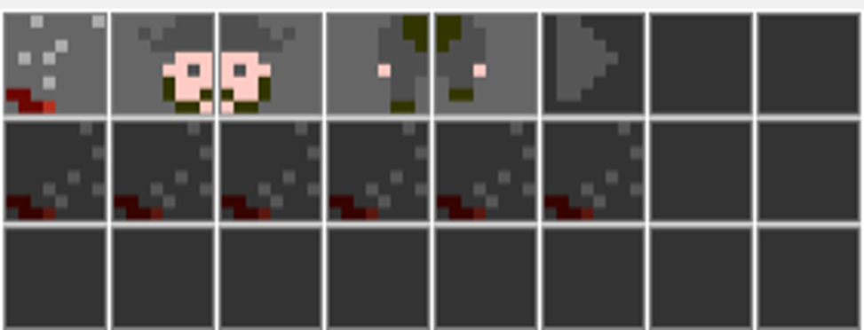
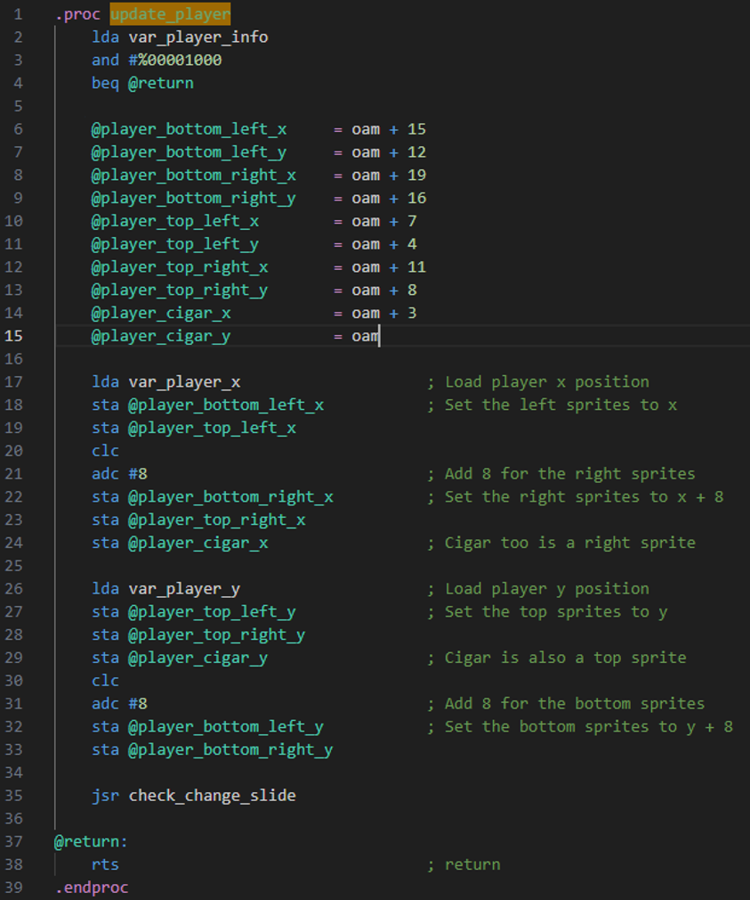
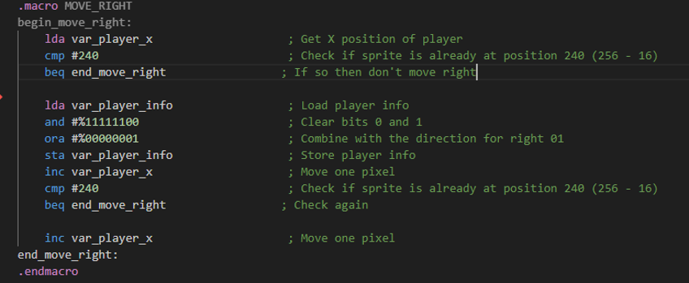

About NESlides

The goal of this project was to create a simple game or application for the NES. While we developed it using emulators, it could still be tested on real NES hardware using special cartridges. Our original idea was to build a presentation tool, something like PowerPoint, but designed specifically for the NES.
Since this was my very first group project, it ended up being more complicated than I expected!
What I did
The Beginning
As this was my first team project and my first project in Assembly, I wasn't entirely sure what to expect. So we collectively decided to take things slow and avoid aiming too high. We settled on creating a slide presentation tool that could be easily expanded over time.
With tasks split up and the starting point decided, I chose the biggest challenge: “BIG TEXT”, because what good is a presentation tool without proper title text?
With limited ROM space, I set out to build an upscaler that could take any tile and turn it into 4 larger tiles. The challenge was that we only had 256 background tiles to work with. A single font with 26 letters, 10 digits, and a few symbols already eats up over 40 tiles. Wanting to support multiple fonts, images, and backgrounds, multiplying everything by 4 would eat up more than half the ROM and just for large text!
So, the Upscaler was born. The idea was to extract tile data, upscale it, and store it. Not in CHR-ROM (which can't be written to), but in CHR-RAM. RAM writable during VBLANKS (well anytime really but writing to it during display will cause issues!), which made it perfect for this case. After a good week of experimentation, I had made a working upscaled text!
The Roadblock
And then came the first major roadblock: team management. We had upscaled text, but no display, no slides, no actual application. Our team lacked leadership, and while I tried to keep the team motivated, it wasn't enough. Progress stalled, and most of the team was working on tasks that didn't contribute meaningfully to the core idea.
We eventually had a much-needed group discussion. The project wasn't going anywhere, and we all knew it. What was going wrong? How could we fix it? We agreed that the project lacked excitement. Unlike the other groups, we were making a tool, and it just wasn't fun.
So, we pivoted and introducing game-like elements to make the tool more engaging, both for us and potential users. While I harboured doubt that it would solve everything, it was at least a step forward. Sadly, progress stalled again not long after.
At that point, I decided things needed to change. The team wasn't moving, and I was the only one actively contributing. I had two options: let the project fail or take control and at least fail trying. I chose the latter. I wasn't going to stand by and watch it fall apart.
The Wake-Up Call
I quickly identified issues in our workflow and imposed a new structure on the team. It didn't make up for lost time, but it finally allowed us to function properly as a group. With time running short, I picked up the most important mechanics and pushed forward.
In the end, we managed to pull together a fully working project! It's a fraction of the potential we had to deliver but in turn teached me a very valuable lesson about working as a group! The best group is nothing without the right communication!
My Contributions
- Displaying text on screen from CHR-RAM
- Reading and writing to/from CHR-RAM
- Upscaling and displaying upscaled text
- Support for "infinite" upscaling (upscaling already upscaled text)
- Slide display system
- Automatic slide formatting
- Controller input handling
- Menu system and blinking text
- Slide navigation via controller
- Sprite movement
- Sprite collision with the world
- Shooting mechanics
- Bullet logic and background collision
- Doors and slide switching with door interaction
- Audio system and audio logic
It was a rocky road, but we got there in the end. I learned a lot, both technically and in terms of teamwork. It was a fun challenge, and playing around in Assembly really gave me a deeper understanding and respect of how things were done back in the NES era.
You can find the project files on GitHub below. To try it out, yo'll need an NES emulator.
Technical Details
The Upscaler
This project is one of the few projects for which I don't have a readme, so instead I will cover technical details here.
Starting with the upscaler, let's take a look at my approach. First let's understand the information we get from a tile. Each tile is 8x8 pixels, each pixel can have up to 4 colors, represented with 2 bits (00, 01, 10, 11). This information will then sample the color from the current palette and tadah, colored tiles.
So we have 64 pixels with 2 bits each, that is 128 bits or 16 bytes of information for each tile. Now, when you read the information of a tile, you read 1 byte at a time (8 bits), so you would expect when reading the first 8 bits to get the information for the first 4 pixels, right? Well, no. You actually get half of the information of the first 8 pixels. So what about the second 8 bits? The other half, right? Well, again no. Now you get the second row of pixels' first half of the information. It's not until you get around to the 9th byte that you get the second half of the info. (This took a while to figure out but I couldn't tell you why it's like that.)

Now for the astute you may be wondering: what about the other half? Indeed, I duplicate both halves and now end up with 8 tiles? Well, when I write the information back to the CHR-RAM, just like when you read it, it expects the first half (8 bytes) and then stacks on top the second half (8 bytes) to make a complete tile. So I needed to buffer 64 bytes of information! And simply write to the PPU in the correct order. For that I used a loop with some maths, which is why I map them like 1-3-2-4 instead, it makes the mapping easier to keep track of.


Moving the Player
If you're still here, you must find this interesting! So here's some more cool stuff!
Our player, just like Mario, is made of 4 sprites (technically 5 with the cigar being its own sprite).

So, how do we move and display all those correctly? Well... there's no magic trick, we need to keep track of each sprite and update them accordingly. But that doesn't mean we can't be clever about it!
In the images below, you'll notice we use named "variables" (with `@`) to manage sprite data more easily. The `@` symbol lets us assign visual names to values. These aren't real variables and have very defined scopes, but when compiled, the `@` is replaced with actual value defined.
We then define two global variables (and yes everything is global in Assembly!) to keep track of the player's position. When the player moves, we simply update these variables, and all the sprites accordingly! And voila, simple and clear player movement.
It's a neat trick that keeps things simple while allowing us to expand on player movement however we want!


Bullets, Collision & Controls
I've still got plenty more to talk about including bullets, collisions, input handling, and how it all ties together. However this is getting pretty long already. I might revisit and expand this section later.
In any case, I hope you enjoyed this little code breakdown! If you're curious about anything or want to dive deeper into the details, don't hesitate to reach out!